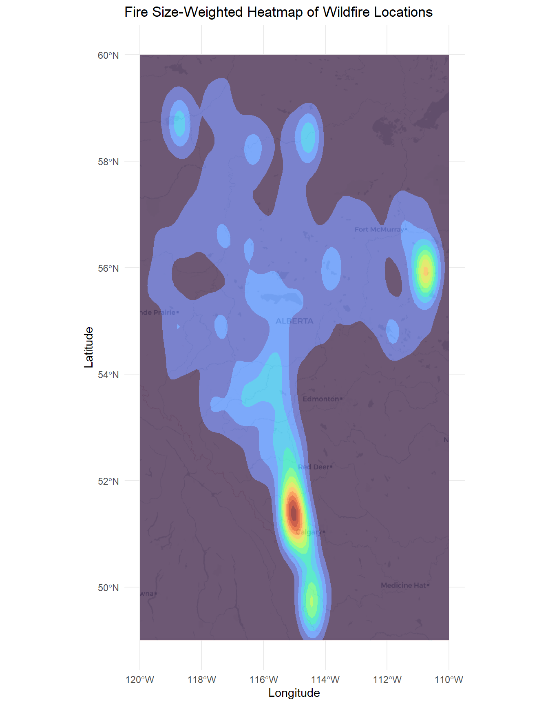
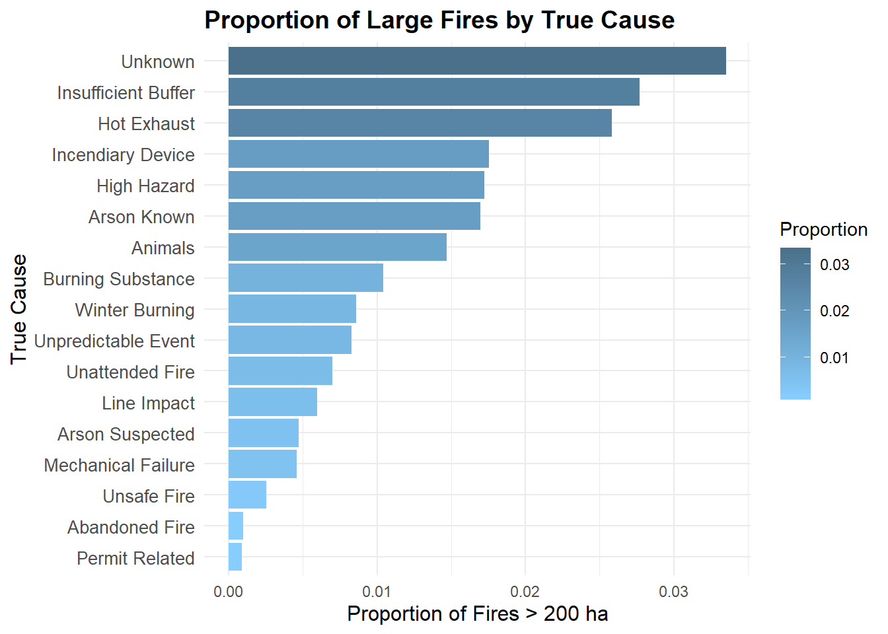
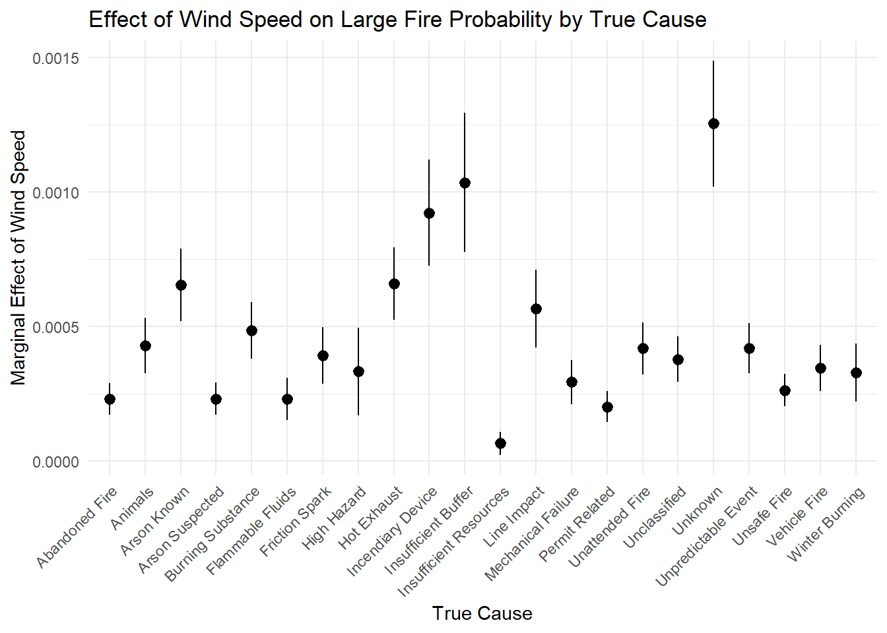
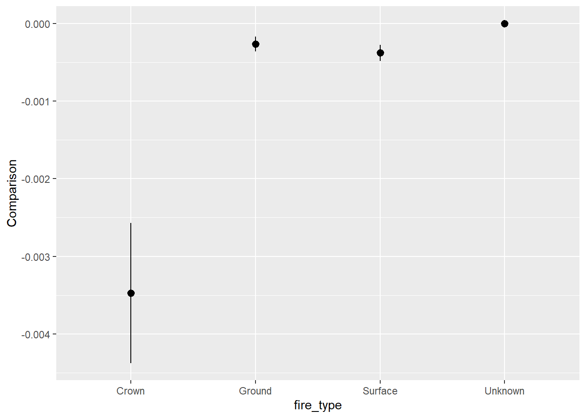

library(tidyverse)
library(gt)
library(ggmap)
library(ggspatial)
library(sf)
library(terra)
library(maptiles)
library(viridis)
library(marginaleffects)
library(broom)
library(kableExtra)Historical Alberta Wildfire Data
About the Data
This dataset contains information on wildfires in Canada, compiled from official government sources under the Open Government Licence – Alberta.
The data was gathered to monitor, assess, and respond to wildfire risks across different regions. Wildfires have far-reaching environmental, social, and economic consequences. From an equity and inclusion perspective, analyzing wildfire data can reveal geographic and resource-based disparities in detection and containment efforts, and highlight how certain populations face greater risks due to climate change and limited infrastructure.
In particular, Alberta experiences some of the most severe and frequent wildfires in Canada due to its vast forested areas, dry climate, and increasing temperatures linked to climate change. Wildfires in Alberta can lead to widespread evacuations, destroy homes and livelihoods, and disproportionately affect rural and Indigenous communities, who may lack access to adequate emergency services and infrastructure. Understanding the patterns of wildfire occurrence and spread helps policymakers, environmental planners, and emergency services allocate resources more equitably and implement effective mitigation strategies. This dataset enables data-driven approaches to reduce the impact of wildfires and support more resilient and inclusive disaster management practices across Alberta and beyond.
Download
Metadata
DOI
TBD
CSV Name
wildfire.csv
Dataset Characteristics
Multivariate
Subject Area
Climate Change
Associated Tasks
Classification, Time Series, Geospatial Analysis
Feature Type
Categorical, Integer
Instances
26551 records
Features
50
Has Missing Values?
Yes
Variables
| Variable Name | Role | Type | Description | Units | Missing Values |
|---|---|---|---|---|---|
year |
ID | Integer | Year of the wildfire incident | Year | No |
fire_number |
ID | String | Unique identifier for each wildfire | - | No |
current_size |
Feature | Float | Final estimated size of the wildfire | Hectares | No |
size_class |
Feature | Categorical | Size classification based on fire area | - | No |
latitude |
Feature | Float | Latitude coordinate of fire origin | Degrees | No |
longitude |
Feature | Float | Longitude coordinate of fire origin | Degrees | No |
fire_origin |
Metadata | Categorical | General location or region where fire started | - | No |
general_cause |
Feature | Categorical | Broad cause classification of the fire | - | Yes |
responsible_group |
Metadata | Categorical | Agency or group responsible for managing the fire | - | Yes |
activity_class |
Feature | Categorical | Activity classification at the time of ignition | - | Yes |
true_cause |
Feature | Categorical | Detailed fire cause (e.g., Arson Known, Hot Exhaust, Line Impact, Unattended Fire, etc.) | - | No |
fire_start_date |
Time | Date | Date the fire started | YYYY-MM-DD | No |
detection_agent_type |
Feature | Categorical | Type of detection method used (e.g., lookout, patrol, aircraft) | - | No |
detection_agent |
Feature | Categorical | Specific agent who detected the fire | - | Yes |
assessment_hectares |
Feature | Float | Officially assessed size of the fire | Hectares | No |
fire_spread_rate |
Feature | Float | Rate at which the fire spread | Hectares/hour | Yes |
fire_type |
Feature | Categorical | Fire behavior classification (e.g., surface, crown, ground) | - | No |
fire_position_on_slope |
Feature | Categorical | Position of the fire on slope (e.g., bottom, mid-slope, ridge) | - | Yes |
weather_conditions_over_fire |
Feature | Text | Description of weather at the fire location | - | Yes |
temperature |
Feature | Float | Temperature at the fire location | °C | Yes |
relative_humidity |
Feature | Float | Relative humidity at the fire location | % | Yes |
wind_direction |
Feature | Categorical | Wind direction during the fire | - | Yes |
wind_speed |
Feature | Float | Wind speed during the fire | km/h | Yes |
fuel_type |
Feature | Categorical | Dominant vegetation or material burned (e.g., grass, timber) | - | Yes |
initial_action_by |
Metadata | Categorical | Group that initiated suppression efforts | - | Yes |
ia_arrival_at_fire_date |
Time | DateTime | Time when initial action crews arrived | YYYY-MM-DD | Yes |
ia_access |
Feature | Categorical | Level of access for initial attack teams (e.g., road, helicopter only) | - | Yes |
fire_fighting_start_date |
Time | DateTime | Time when firefighting activities officially started | YYYY-MM-DD | Yes |
fire_fighting_start_size |
Feature | Float | Fire size at the time firefighting began | Hectares | Yes |
bucketing_on_fire |
Feature | Binary | Whether aerial bucketing was used on the fire | Yes/No | Yes |
first_bh_date |
Time | DateTime | Date of first blackline containment | YYYY-MM-DD | Yes |
first_bh_size |
Feature | Float | Fire size at time of first blacklining | Hectares | Yes |
first_uc_date |
Time | DateTime | Date when fire was first declared under control | YYYY-MM-DD | Yes |
first_uc_size |
Feature | Float | Fire size when first declared under control | Hectares | Yes |
first_ex_size_perimeter |
Feature | Float | Estimated fire perimeter at the time of first extinguishment | Kilometers | Yes |
Key Features of the Dataset
Each row represents a single wildfire incident and includes information such as:
temperature – The recorded air temperature (°C) at or near the fire location; higher temperatures often increase fire intensity and spread.
wind_speed – Speed of wind (km/h) during the fire; stronger winds can accelerate fire spread and complicate suppression.
relative_humidity – The percentage of moisture in the air; lower humidity typically increases fire risk by drying out vegetation.
fire_spread_rate – The rate at which the fire expanded (e.g., hectares/hour); reflects the fire’s growth dynamics.
fire_type – Classification of fire behavior (e.g., surface, crown); influences how fires are managed and controlled.
fuel_type – The dominant type of vegetation or material burned (e.g., grass, timber); determines fire intensity and burn characteristics.
ia_access – Indicator of how easily suppression crews could access the fire location; limited access can delay response.
latitude – Geographic latitude coordinate of the fire’s origin; used for spatial analysis and regional modeling.
longitude – Geographic longitude coordinate of the fire’s origin; used alongside latitude for location-specific insights.
Purpose and Use Cases
This dataset is designed to support analysis of:
Factors contributing to the spread, intensity, and size of wildfires
The impact of weather conditions and fuel types on fire behavior
Geographic and seasonal patterns in wildfire occurrence
The effectiveness and timeliness of initial suppression efforts
Relationships between fire causes, detection methods, and responsible parties
Case Study
Objective
Large wildfires pose serious environmental, social, and economic challenges, especially as climate conditions become more extreme. Identifying the key environmental and human factors linked to these fires can help guide more effective prevention and response strategies.
So, our main question is:
Can we identify the environmental and human factors most associated with large wildfires?
According to Natural Resources Canada, wildfires exceeding 200 hectares in final size are classified as “large fires.” While these fires represent a small percentage of all wildfires, they account for the majority of the total area burned annually.
The goal is to explore potential predictors of fire size, such as weather, fire cause, and detection method, and provide insights that could inform early interventions and resource planning.
Analysis
Loading Libraries
1. Data Cleaning & Processing
- Converted fire size to numeric
- Created a binary variable
large_fire(TRUE if >200 ha) - Filtered out incomplete records
2. Exploratory Data Analysis
Heat map of Fire Size by Location
The heat map visualizes where wildfires are most concentrated geographically, using latitude and longitude data overlaid on Alberta’s administrative boundaries. The shapefile, retrieved from Alberta Geospatial Data and Statistics, provides the geographic context needed to highlight wildfire hotspots and identify regions with higher frequency or severity of fire events.
alberta_shape <- suppressMessages(st_read("../../data/raw/Alberta_shapefiles/EDS_ENACTED_BILL33_15DEC2017.shp"))Reading layer `EDS_ENACTED_BILL33_15DEC2017' from data source
`C:\Users\Azin\Desktop\Azin files\Azin's Document\UBC\capstone project\diverse-data-hub.github.io\data\raw\Alberta_shapefiles\EDS_ENACTED_BILL33_15DEC2017.shp'
using driver `ESRI Shapefile'
Simple feature collection with 87 features and 8 fields
Geometry type: POLYGON
Dimension: XY
Bounding box: xmin: -329155.7 ymin: 5425575 xmax: 365133.5 ymax: 6659344
CRS: NAst_crs(alberta_shape) <- 3401
alberta_shape <- st_transform(alberta_shape, crs = 4326)
wildfire_plot <- wildfire_clean |>
filter(!is.na(latitude), !is.na(longitude), !is.na(assessment_hectares), assessment_hectares > 0)
wildfire_sf <- st_as_sf(wildfire_plot, coords = c("longitude", "latitude"), crs = 4326)
basemap <- get_tiles(wildfire_sf, provider = "CartoDB.Positron", crop = TRUE, zoom = 6)# Plot heatmap
ggplot() +
layer_spatial(basemap) +
stat_density_2d_filled(
data = wildfire_plot,
aes(x = longitude, y = latitude, weight = current_size),
alpha = 0.7,
contour = TRUE
) +
scale_fill_viridis_d(option = "turbo") +
labs(
title = "Fire Size-Weighted Heatmap of Wildfire Locations",
x = "Longitude", y = "Latitude"
) +
theme_minimal() +
theme(legend.position = "none") 
Proportion of Large Fires by Cause
wildfire_clean |>
group_by(true_cause) |>
summarize(prop_large = mean(large_fire, na.rm = TRUE)) |>
filter(prop_large > 0) |>
ggplot(aes(x = reorder(true_cause, prop_large), y = prop_large, fill = prop_large)) +
geom_col() +
coord_flip() +
scale_fill_gradient(low = "skyblue1", high = "skyblue4") +
labs(
title = "Proportion of Large Fires by True Cause",
x = "True Cause",
y = "Proportion of Fires > 200 ha",
fill = "Proportion"
) +
theme_minimal() +
theme(
plot.title = element_text(size = 14, face = "bold"),
axis.text.y = element_text(size = 10),
axis.title = element_text(size = 12)
)
3. Logistic Regression Model
Governments and emergency planners often care about whether a fire becomes large, not necessarily exactly how large. This makes a binary classification more interpretable and actionable for planning responses. Logistic regression predicts probability of exceeding a threshold, such as “Will this fire exceed 200 hectares?” Modeling the probability of exceeding such a threshold is often more operationally useful than modeling exact hectares.
In Decision Making for Wildfires: A Guide for Applying a Risk Management Process at the Incident Level, the authors outline a risk-based decision-making framework. A key concept is identifying risk thresholds to guide decisions. This aligns with the broader goals of wildfire risk management, which emphasize anticipating fire severity and planning appropriate responses. Logistic regression is well-suited to this context because it models the probability of crossing such thresholds, such as a fire becoming large, enabling a clear, interpretable basis for making timely, risk-informed decisions.
We built a logistic regression model to predict the likelihood of a fire becoming large based on a set of environmental and operational factors that are consistently measurable, statistically significant, and operationally relevant.
In our logistic regression model, we selected key environmental and contextual variables from the wildfire_clean dataset that are well-established drivers of wildfire behavior. These include:
temperature: Higher temperatures increase evaporation, dry out vegetation, and promote ignition and fire spread.wind_speed: Strong winds feed oxygen to the fire and can carry embers over long distances, accelerating spread.relative_humidity: Low humidity conditions dry fuels, increasing the probability and intensity of fire ignition.fire_spread_rate: Reflects how quickly a fire expands; a dynamic indicator of fire behavior.fire_type: Indicates how the fire behaves (e.g., surface vs. crown fire), which affects controllability and risk.fuel_type: Different vegetation types burn at different intensities and rates; fuels like grass or timber respond differently under the same conditions.ia_access: Stands for Initial Attack Access. Limited access can delay suppression efforts, allowing fires to grow larger.
These variables were chosen because they each represent core determinants of ignition likelihood, fire intensity, and suppression difficulty. As explained in Introduction to Wildland Fire by Pyne, Andrews, and Laven, this theoretical foundation supports our inclusion of both meteorological and environmental variables in the model.
Mathematical Definition of the Logistic Regression Model
We aim to estimate the probability that a wildfire becomes large (i.e., burns more than 200 hectares), using logistic regression.
Let:
\[ Y_i = \begin{cases} 1, & \text{if fire } i \text{ is large (area > 200 ha)} \\ 0, & \text{otherwise} \end{cases} \]
\[ \mathbf{x}_i = \left( \text{temperature}_i, \text{wind\_speed}_i, \text{relative\_humidity}_i, \text{fire\_spread\_rate}_i, \text{fire\_type}_i, \text{fuel\_type}_i, \text{ia\_access}_i \right) \]
Then the model is defined as:
\[ \Pr(Y_i = 1 \mid \mathbf{x}_i) = \frac{1}{1 + \exp(-\eta_i)} \]
where the linear predictor is:
\[ \eta_i = \beta_0 + \beta_1 \cdot \text{temperature}_i + \beta_2 \cdot \text{wind\_speed}_i + \beta_3 \cdot \text{relative\_humidity}_i + \beta_4 \cdot \text{fire\_spread\_rate}_i + \boldsymbol{\beta}_{\text{cat}}^\top \mathbf{x}_{i,\text{cat}} \]
Here:
\[ \begin{aligned} \beta_0 & \text{ is the intercept} \\ \boldsymbol{\beta}_{\text{cat}} & \text{ is the vector of coefficients for the categorical predictors} \\ \mathbf{x}_{i,\text{cat}} & \text{ is the vector of dummy variables representing those categorical predictors} \end{aligned} \]
model <- glm(
large_fire ~ temperature + wind_speed + relative_humidity +
fire_spread_rate + fire_type + fuel_type + ia_access,
data = wildfire_clean,
family = "binomial"
)
tidy_model <- tidy(model) |>
mutate(
estimate = round(estimate, 3),
std.error = round(std.error, 3),
statistic = round(statistic, 2),
p.value = round(p.value, 4)
)
kable(tidy_model
, caption = "Logistic Regression Results: Predicting Large Fires (> 200 ha)") |>
kable_styling(bootstrap_options = c("striped", "hover", "condensed", "responsive"), full_width = FALSE)| term | estimate | std.error | statistic | p.value |
|---|---|---|---|---|
| (Intercept) | -2.016 | 0.401 | -5.03 | 0.0000 |
| temperature | 0.048 | 0.010 | 4.66 | 0.0000 |
| wind_speed | 0.050 | 0.004 | 11.03 | 0.0000 |
| relative_humidity | -0.031 | 0.004 | -7.64 | 0.0000 |
| fire_spread_rate | 0.104 | 0.010 | 10.30 | 0.0000 |
| fire_typeGround | -1.354 | 0.184 | -7.37 | 0.0000 |
| fire_typeSurface | -1.093 | 0.129 | -8.48 | 0.0000 |
| fire_typeUnknown | -13.012 | 3683.753 | 0.00 | 0.9972 |
| fuel_typeC2 | -0.945 | 0.175 | -5.40 | 0.0000 |
| fuel_typeC3 | -1.024 | 0.276 | -3.71 | 0.0002 |
| fuel_typeC4 | 0.454 | 0.337 | 1.35 | 0.1775 |
| fuel_typeC6 | -16.192 | 4492.954 | 0.00 | 0.9971 |
| fuel_typeC7 | -16.211 | 1258.218 | -0.01 | 0.9897 |
| fuel_typeD1 | -16.322 | 274.554 | -0.06 | 0.9526 |
| fuel_typeM1 | -1.798 | 0.362 | -4.97 | 0.0000 |
| fuel_typeM2 | -2.272 | 0.279 | -8.13 | 0.0000 |
| fuel_typeM3 | -15.610 | 3734.948 | 0.00 | 0.9967 |
| fuel_typeM4 | -15.179 | 6522.639 | 0.00 | 0.9981 |
| fuel_typeO1a | -2.912 | 0.289 | -10.08 | 0.0000 |
| fuel_typeO1b | -3.514 | 0.456 | -7.70 | 0.0000 |
| fuel_typeS1 | -2.189 | 0.486 | -4.51 | 0.0000 |
| fuel_typeS2 | -2.242 | 0.546 | -4.11 | 0.0000 |
| fuel_typeUnknown | -4.148 | 0.481 | -8.62 | 0.0000 |
| ia_accessGround | -0.861 | 0.410 | -2.10 | 0.0356 |
| ia_accessHover Exit | -0.083 | 0.412 | -0.20 | 0.8407 |
| ia_accessRappel | -14.797 | 554.243 | -0.03 | 0.9787 |
| ia_accessUnknown | 0.428 | 0.107 | 3.99 | 0.0001 |
Higher wind speed (0.050, p < 0.001), temperature (0.048, p < 0.001), and fire spread rate (0.104, p < 0.001) significantly increase the odds of a large wildfire, while relative humidity (-0.031, p < 0.001) decreases it. Compared to crown fires, ground fires (-1.354, p < 0.001) and surface fires (-1.093, p < 0.001) are much less likely to result in large fires.
This logistic regression model estimates the factors influencing the likelihood of a large wildfire. Higher temperature, wind speed, and fire spread rate significantly increase the odds of a large fire, while higher relative humidity decreases it. Certain fire types (e.g., Ground, Surface) and fuel types (e.g., M1, M2, O1a, O1b) are associated with significantly lower odds compared to their respective reference categories. The model shows that higher wind speed, lower humidity, and faster fire spread significantly increase the risk of large wildfires.
Let’s dig into our model further by examining how different environmental and operational factors interact to influence fire outcomes.
4. Interpretation of our Model using marginaleffects
The Role of Wind Across Fire Causes
As you’ve likely noticed, we did not include true_cause as a predictor in our logistic regression model because it contains many categories, some of which have very few observations. This can lead to large standard errors, unstable coefficient estimates, and a higher risk of overfitting.
However, true_cause remains an important variable for exploratory analysis. Certain ignition causes may be more sensitive to wind. For example, sparks from power lines can spread quickly in high winds, embers from debris burning can travel farther, and unattended fires can escalate rapidly under windy conditions. We chose wind speed for this analysis because it is a well-documented environmental amplifier of fire behavior particularly when interacting with certain ignition causes.
Given these interactions, it’s valuable to visualize and investigate how the effect of wind speed on large wild fire development varies across different causes. Let’s explore this further through faceted marginal effect plots.
This plot shows how wind speed affects the probability of a large wildfire, and how that effect varies across different true causes of fire.
The x-axis shows the different values of
true_cause(fire ignition source categories).The y-axis shows the marginal effect of wind speed on the predicted probability (i.e., on the response scale) of a fire becoming large.
The plot helps us compare the sensitivity of different fire causes to wind speed. For example, if one cause shows a higher marginal effect, it means that increasing wind speed has a stronger impact on the likelihood of large fires for that cause.
p <- plot_comparisons(
model,
variables = "wind_speed",
by = "true_cause",
type = "response"
)
p +
scale_color_manual(values = rep("darkgreen", length(unique(p$data$by)))) +
scale_fill_manual(values = rep("darkgreen", length(unique(p$data$by)))) +
labs(
title = "Effect of Wind Speed on Large Fire Probability by True Cause",
x = "True Cause",
y = "Marginal Effect of Wind Speed"
) +
theme_minimal() +
theme(axis.text.x = element_text(angle = 45, hjust = 1))
The marginal effects analysis suggests that wind speed may have a relatively stronger impact on the probability of a fire becoming large when the ignition cause is related to Unknown, Insufficient Buffer, Incendiary Device, Hot Exhaust, or Line Impact. However, the overall changes in predicted probabilities are quite small, and the error bars across causes show substantial overlap. This indicates a high degree of uncertainty and suggests that these differences should be interpreted with caution. While the findings may not yet be strong enough to inform operational decisions, they do highlight areas for further exploration. In particular, when wind is forecasted in regions with a history of certain ignition causes, fire managers could use this exploratory insight to guide risk monitoring strategies, while recognizing that more robust evidence is needed before drawing firm conclusions.
Interaction Effects via Marginal Effects
We can also use marginal effects to explore interactions without explicitly adding them to the model, by conditioning on another variable.
This plot shows the marginal effect of relative_humidity on the predicted probability of large fire, calculated separately for each level of fire_type, based on your fitted model.
plot_comparisons(model, variables = "relative_humidity", by = "fire_type")
When comparing the marginal effect of relative humidity across fire types, we found that three fire types showed almost no change in large fire probability as humidity increased. However, one fire type exhibited a noticeably stronger negative effect. This suggests that humidity plays a more meaningful role in suppressing fire growth for certain fire types likely those that are more sensitive to moisture availability, such as crown fires—while having minimal effect on others.
Discussion
This analysis aimed to uncover the key environmental and operational factors associated with the development of large wildfires in Alberta. Using logistic regression and marginal effects, we modeled the probability of a wildfire exceeding 200 hectares, which is a meaningful operational threshold for fire managers.
We found that higher temperature, stronger wind speed, and faster spread rates significantly increase the likelihood of a large wildfire. Conversely, higher relative humidity consistently reduced fire size probability, highlighting its protective role in fire suppression.
In addition to main effects, we explored interaction patterns using marginal effects. While we did not include true_cause directly in the model due to its high cardinality and sparse categories, we used it in conjunction with wind_speed to explore how ignition causes might modulate wind’s influence on fire growth. The marginal effect plots suggest that certain causes—such as incendiary devices, line impacts, or insufficient buffer zones are more sensitive to wind speed, potentially due to the nature of how these fires spread under wind-driven conditions.
Similarly, by plotting the effect of relative_humidity across different fire_type categories, we observed that humidity suppresses large fire development more strongly in certain fire types, particularly crown fires. This implies that moisture-based mitigation strategies may be more effective in forests prone to crown fire behavior, while having less impact on surface or ground fires.
While some observed differences in marginal effects were small in magnitude and had overlapping confidence intervals, these nuanced insights still provide value. They highlight where future research or localized fire management protocols could focus, especially under climate scenarios with increasing temperature and wind extremes.
Overall, this case study illustrates how statistical modeling paired with domain-informed exploratory tools like marginal effects can support risk-informed, data-driven wildfire management.
Attribution
Data sourced from the Government of Alberta via the Government of Canada’s Open Government Portal, available under an Open Government Licence - Alberta. Original dataset: Historical wildfire data: 2006-2024.